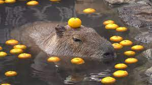

Hello! I'm Cool Capybara!


Introduction
Hello! My name is *redacted* and I'm a student at Brown taking CS1300: User Interfaces and User Experiences.
Background
I am a senior studying computer science at Brown. This is my first design-focused CS class, so with this portfolio, I want to display my efforts and the progress I've made in the class over the course of the semester!
Projects
Iterative Design
I helped design low-fidelity and high-fidelity prototypes for a roommate-sharing startup with 3 of my classmates.

Development
I expanded on the bakery website and added filtering capabilities for different types of baked goods (e.g. French baked goods).
Learn More